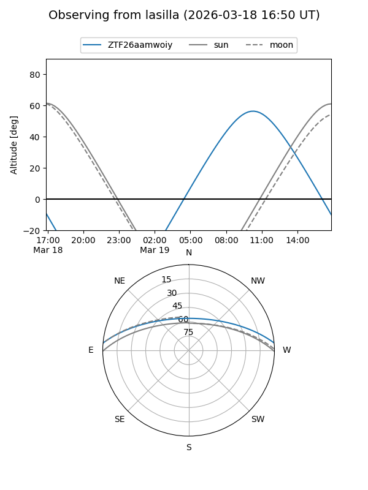
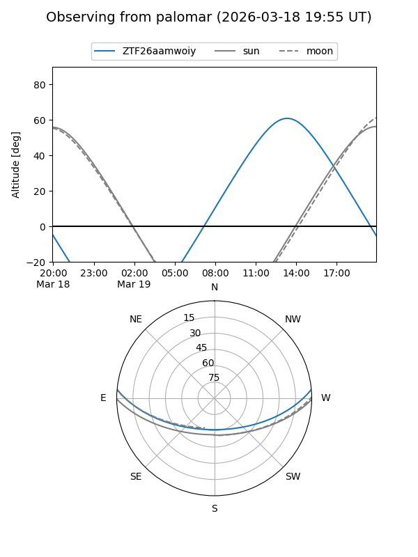

ZTF26aamwoiy
Target ZTF26aamwoiy at 2026-03-18 15:49
Aliases and brokers:
FINK: link
Lasair: link
ALeRCE: link
alt names
ZTF26aamwoiy (ztf,fink_ztf)
Coordinates:
equatorial (ra, dec) = 259.9299,+4.35199
equatorial (HMS+DMS) = 17:19:43.19,+04:21:07.17
galactic (l, b) = (26.1258,+22.35476)
Flags:
Photometry:
last ztfg=20.00
1 ztfg detections
Lightcurve
Visibility


Additional plots